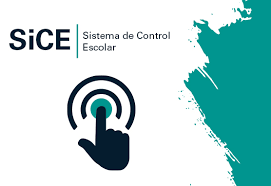

INFORMACION EXTRA

Control y servicios escolares
Area de concentracion y conocimiento donde se lleva a acabo las reglas y toda la organizacio que se tenga que ver con relaciones a los alumnos o alguna ayuda que necesiten, too es aqui donde los alumnos pueden preguntar sobre sus dudas mas a dettale y extras de las materias que cursan, aqui es donde se solucionan problemas tanto sociales, individuales de los alumnos y papeleos que necesiten, es un area de igual que mantiene el orden dando las reglas de convivenvia o incluso dando avisos en salones sobre algun evento o fecha proxima acerca de algo en particular.
Reglas y normas control escolar
Registrar y organizar la información de los participantes y usuarios de los programas de capacitación y profesionalización que ofrece la Escuela para elaborar los documentos probatorios que avalen el aprovechamiento de los mismos y generar las estadísticas respectivas.
Funciones
Establecer los lineamientos para la inscripción a los programas de la Escuela de Gobierno.
Diseñar e implementar los procedimientos pertinentes para la incorporación a los programas académicos de la Escuela.
Acopiar y organizar la información personal, de aprovechamiento y seguimiento que le provea el Departamento Académico sobre el desarrollo de los diversos programas.
Archivar en forma sistemática la información de los participantes en los diferentes programas.
Elaborar los documentos para la acreditación de los programas de la Escuela de Gobierno.
Mantener actualizada la base de datos de alumnos, servidores públicos o interesados, en coordinación con el Departamento de Promoción.
Integrar y actualizar la estadística general del Control Escolar de la Escuela, en coordinación con el Departamento Académico.
Control Interno Institucional
1 - Acuerdo por el que se emiten las normas Generales de Control Interno de la Administración Pública Central y Paraestatal del Estado de Quintana Roo.
2 - Acuerdo por el cual se emiten los lineamientos para la integración y funcionamiento de los Comités de Control y Desempeño Institucional para la Administración Pública Central y Paraestatal del Estado de Quintana Roo.
3 - Acuerdo por el cual se emiten las políticas de administración de riesgos y los lineamientos de la metodología para la identificación y evaluación de riesgos de procesos para la administración pública central y paraestatal del Estado de Quintana Roo.
4 - Acuerdo por el cual se emite la Metodología para determinar el estado que guarda el Sistema de Control Interno Institucional y los Lineamientos para la Elaboración y Representación de su Informe.
Recursos Humanos
La comisión mixta de escalafón del colegio de bachilleres del estado de Q.Roo(COBAQROO), con fundamento en lo dispuesto en los articulos 1, 2, 3, 4, 7, 8, 9, 13, 15, 21, 34, 45, 54, 55, 56, 57, 58 y demas relativos y aplicables del reglamento de la comision mixta de escalafón vigente, convoca a los trabajadores y personas interesadas en ocupar las vacantes definitivas de "auxiliar de bibliotecas" de los centros educativos del COBAQROO, que mas adelante sin indicar, quienes deberan de acurrir los requisitos, perfiles y procedimientos antes mencionados.